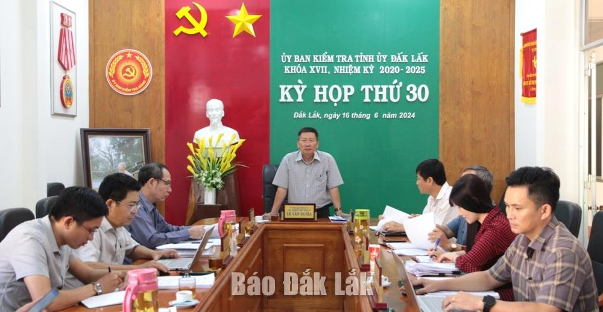

Kỷ luật nguyên Phó Giám đốc Sở Tài chính, đề nghị kỷ luật Giám đốc, nguyên Giám đốc Sở GD&ĐT
Kỷ luật, xem xét cách chức nguyên Trưởng phòng Văn hóa xã hội

Đồng chí Lê Văn Nghĩa, Ủy viên Ban Thường vụ Tỉnh ủy, Chủ nhiệm UBKT Tỉnh ủy phát biểu tại kỳ họp
Đề nghị Ban Thường vụ Tỉnh ủy xem xét, thi hành kỷ luật theo thẩm quyền đối với các đồng chí: (1) Phạm Đăng Khoa, Tỉnh ủy viên, Bí thư Đảng ủy, Giám đốc Sở Giáo dục và Đào tạo; (2) Phan Hồng, đảng viên, nguyên Tỉnh ủy viên, nguyên Phó Bí thư Đảng ủy, nguyên Giám đốc Sở Giáo dục và Đào tạo.
- Kiểm điểm, xem xét trách nhiệm về những khuyết điểm, vi phạm liên quan đến việc tổ chức thực hiện các gói thầu do Công ty AIC thực hiện đối với các đồng chí: (1) Nguyễn Quang Trường, nguyên Bí thư Đảng ủy, nguyên Giám đốc Sở Lao động - Thương binh và xã hội; (2) Phùng Văn Định, nguyên Phó Giám đốc Sở Kế hoạch và Đầu tư; (3) Lữ Ngọc Sinh, Giám đốc Ban Quản lý dự án đầu tư xây dựng công trình dân dụng và công nghiệp, nguyên Trưởng phòng Đấu thầu, Thẩm định và Giám sát đầu tư, Sở Kế hoạch và Đầu tư; (4) Võ Danh Sơn, nguyên Phó chánh Văn phòng UBND tỉnh; (5) Trần Thị Hà, nguyên Phó chánh Văn phòng UBND tỉnh; (6) Bùi Trường Phong, nguyên Bí thư Đảng ủy, nguyên Giám đốc Bệnh viện Đa khoa vùng Tây Nguyên.